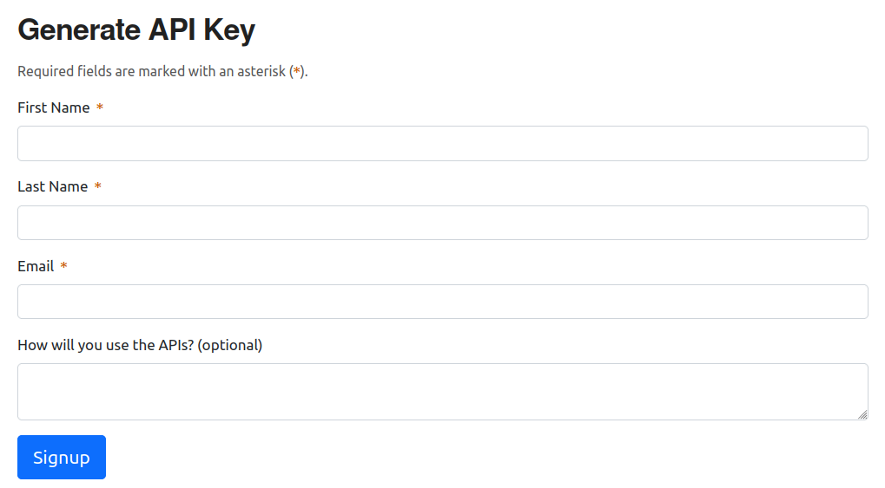
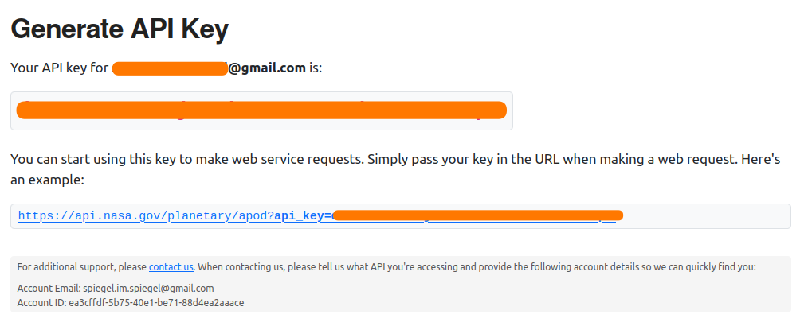

NASA API を使って “Astronomy Picture of the Day” のデータを取得する

Mastodon の自 TL を眺めてたら
というリポジトリが紹介されていた。 NASA が毎日更新している “Astronomy Picture of the Day” のデータを取得できるツールだそうな。 コマンドライン・インタフェースで pure Go で書かれているらしい。 当然マルチプラットフォーム。
ふむむ。 さっそく試してみよう。
NASA API キーを取得する
NASA では自身が保有するデータを Web API を使って取得できるらしい。
件のツールはこの API を使うようで，まずは API キーを取得する必要がある。
なお，お試し用に DEMO_KEY という API キーが用意されている。
In documentation examples, the special
DEMO_KEYapi key is used. This API key can be used for initially exploring APIs prior to signing up, but it has much lower rate limits, so you’re encouraged to signup for your own API key if you plan to use the API (signup is quick and easy). The rate limits for theDEMO_KEYare:
- Hourly Limit: 30 requests per IP address per hour
- Daily Limit: 50 requests per IP address per day
NASA Open APIs
とりあえず軽く試すのであれば，これを使ってもいいかもしれない。
API の取得は簡単。
“NASA Open APIs” ページの以下のフォームに必要事項を入力して [Signup] すればいい。

NASA Open APIs
するとこんな感じに結果が返ってくる（大事なとこ塗りつぶしてます，ご容赦）。 メールアドレス以外の機微データは要求しないので比較的お気軽に使える。

NASA Open APIs
同じ内容が登録したメールにも送られる。
早速試してみよう（便宜上，キーを DEMO_KEY で表記している）。
$ curl "https://api.nasa.gov/planetary/apod?api_key=DEMO_KEY" | jq .
{
"copyright": "Mehmet Ergün",
"date": "2023-02-22",
"explanation": "Our Sun is becoming a busy place. Only two years ago, the Sun was emerging from a solar minimum so quiet that months would go by without even a single sunspot. In contrast, already this year and well ahead of schedule, our Sun is unusually active, already nearing solar activity levels seen a decade ago during the last solar maximum. Our increasingly active Sun was captured two weeks ago sporting numerous interesting features. The image was recorded in a single color of light called Hydrogen Alpha, color-inverted, and false colored. Spicules carpet much of the Sun's face. The brightening towards the Sun's edges is caused by increased absorption of relatively cool solar gas and called limb darkening. Just outside the Sun's disk, several scintillating prominences protrude, while prominences on the Sun's face are known as filaments and show as light streaks. Magnetically tangled active regions are both dark and light and contain cool sunspots. As our Sun's magnetic field winds toward solar maximum over the next few years, whether the Sun's high activity will continue to increase is unknown.",
"hdurl": "https://apod.nasa.gov/apod/image/2302/SunHalphaC_Ergun_2065.jpg",
"media_type": "image",
"service_version": "v1",
"title": "Our Increasingly Active Sun",
"url": "https://apod.nasa.gov/apod/image/2302/SunHalphaC_Ergun_960.jpg"
}
おー。 できたできた。
APOD データ取得用 Web API の URL クエリパラメータとして以下のものが使える。
Parameter Type Default Description dateYYYY-MM-DDtoday The date of the APOD image to retrieve start_dateYYYY-MM-DDnone The start of a date range, when requesting date for a range of dates. Cannot be used with date. end_dateYYYY-MM-DDtoday The end of the date range, when used with start_date. countintnone If this is specified then countrandomly chosen images will be returned. Cannot be used withdateorstart_dateandend_date.thumbsboolFalse Return the URL of video thumbnail. If an APOD is not a video, this parameter is ignored. api_keystringDEMO_KEYapi.nasa.govkey for expanded usage
NASA Open APIs
では，昨日（2023-02-21）今日（2023-02-22）の2日間のデータを取ってみよう
$ curl "https://api.nasa.gov/planetary/apod?api_key=DEMO_KEY&start_date=2023-02-21&end_date=2023-02-22" | jq .
% Total % Received % Xferd Average Speed Time Time Time Current
Dload Upload Total Spent Left Speed
100 2522 100 2522 0 0 2208 0 0:00:01 0:00:01 --:--:-- 2208
[
{
"copyright": "Tara Mostofi",
"date": "2023-02-21",
"explanation": "They are both falling. The water in Yosemite Falls, California, USA, is falling toward the Earth. Comet ZTF is falling toward the Sun. This double cosmic cascade was captured late last month as fading Comet C/2022 E3 (ZTF) had just passed its closest to planet Earth. The orange star just over the falls is Kochab. With the exception of a brief encounter with a black bear, the featured image was a well-planned composite of a moonlit-foreground and long-duration background exposures - all designed to reconstruct a deep version of an actual single sight. Although Comet ZTF is now fading as it glides back to the outer Solar System, its path is determined by gravity and so it can be considered to still be falling toward the Sun -- but backwards. Comet ZTF Gallery: Notable Submissions to APOD",
"hdurl": "https://apod.nasa.gov/apod/image/2302/CometZtfYosemite_Mostofi_1639.jpg",
"media_type": "image",
"service_version": "v1",
"title": "Comet ZTF over Yosemite Falls",
"url": "https://apod.nasa.gov/apod/image/2302/CometZtfYosemite_Mostofi_960.jpg"
},
{
"copyright": "Mehmet Ergün",
"date": "2023-02-22",
"explanation": "Our Sun is becoming a busy place. Only two years ago, the Sun was emerging from a solar minimum so quiet that months would go by without even a single sunspot. In contrast, already this year and well ahead of schedule, our Sun is unusually active, already nearing solar activity levels seen a decade ago during the last solar maximum. Our increasingly active Sun was captured two weeks ago sporting numerous interesting features. The image was recorded in a single color of light called Hydrogen Alpha, color-inverted, and false colored. Spicules carpet much of the Sun's face. The brightening towards the Sun's edges is caused by increased absorption of relatively cool solar gas and called limb darkening. Just outside the Sun's disk, several scintillating prominences protrude, while prominences on the Sun's face are known as filaments and show as light streaks. Magnetically tangled active regions are both dark and light and contain cool sunspots. As our Sun's magnetic field winds toward solar maximum over the next few years, whether the Sun's high activity will continue to increase is unknown.",
"hdurl": "https://apod.nasa.gov/apod/image/2302/SunHalphaC_Ergun_2065.jpg",
"media_type": "image",
"service_version": "v1",
"title": "Our Increasingly Active Sun",
"url": "https://apod.nasa.gov/apod/image/2302/SunHalphaC_Ergun_960.jpg"
}
]
うんうん。 問題なさそうだね。
apod-cli を動かしてみる
準備が整ったので，いよいよ apod-cli を使ってデータを取得してみよう。
apod-cli のバイナリはリポジトリの最新リリースページから取得できる。
Windows, macOS (Darwin), Linux 版が用意されているので，それぞれのプラットフォームに合ったものをダウンロードして，中身の apod-cli ファイルをパスが通るフォルダかカレントフォルダに配置する。
macOS であれば Homebrew も使えるらしい。
一覧にないプラットフォームであれば自前でビルドするしかないかな。
何も設定しないで動かすと
$ ./apod-cli
API key not found in Keys.json
Please sign up for an API key at https://api.nasa.gov/#signUp
Once you have your API key, enter it below:
と怒られるので， Keys.json ファイルを作成する。
中身はこんな感じ（値は伏せ字にしています，ご容赦）。
{
"APIKey": "*****************"
}
このファイルをカレントフォルダに置いておけばいいようだ。 あらためて起動すると
$ ./apod-cli
Fetching APODs...
The Hydra Cluster of Galaxies
February 16, 2023
https://apod.nasa.gov/apod/image/2302/ABELL1060_LRGB_NASA.jpg
2023 CX1 Meteor Flash
February 17, 2023
https://apod.nasa.gov/apod/image/2302/gijsDSC_1917(2x3)1600px.jpg
Barred Spiral Galaxy NGC 1365 from Webb
February 18, 2023
https://apod.nasa.gov/apod/image/2302/JWSTMIRI_ngc1365.png
Seven Dusty Sisters in Infrared
February 19, 2023
https://apod.nasa.gov/apod/image/2302/Pleiades_WiseAntonucci_5000.jpg
NGC 1850: Not Found in the Milky Way
February 20, 2023
https://apod.nasa.gov/apod/image/2302/Ngc1850_HubbleOzsarac_2048.jpg
Comet ZTF over Yosemite Falls
February 21, 2023
https://apod.nasa.gov/apod/image/2302/CometZtfYosemite_Mostofi_1639.jpg
Our Increasingly Active Sun
February 22, 2023
https://apod.nasa.gov/apod/image/2302/SunHalphaC_Ergun_2065.jpg
おぉ。 直近一週間分のデータを取るのか（期間はコマンドライン引数で指定できるらしい）。 画像ファイルを落としてきたりとかはしないんだな。 まぁ，こんなもんか。
NASA API 自体は簡単な RESTful API みたいだし，これなら自作してみるのもいいかもなぁ。
ブックマーク
- GitHub - HelixSpiral/apod: Golang wrapper for the Astronomy Picture of the Day API from NASA
- GitHub - dynafa/apod: Golang NASA APOD Web App
- Astronomy Picture of the Day (@APoD@botsin.space) - botsin.space : 非公式 bot
参考文献

- 天文年鑑 2023年版
- 天文年鑑編集委員会 (編集)
- 誠文堂新光社 2022-11-24 (Release 2022-11-24)
- 単行本
- 4416522940 (ASIN), 9784416522943 (EAN), 4416522940 (ISBN)
- 評価
天文ファン必携。2023年版。これが届くと年末って感じ。

- 天体物理学
- Arnab Rai Choudhuri (著), 森 正樹 (翻訳)
- 森北出版 2019-05-28
- 単行本
- 4627275110 (ASIN), 9784627275119 (EAN), 4627275110 (ISBN)
- 評価
興味本位で買うにはちょっとビビる値段なので図書館で借りて読んでいる。まえがきによると，この手のタイプの教科書はあまりないらしい。内容は非常に堅実で分かりやすい。理系の学部生レベルなら問題なく読めるかな。